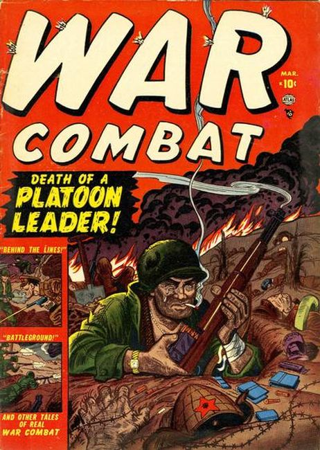

Series: 5 issues 1952
Publisher: Atlas
War anthology series.
Issue #1
- Joe Maneely cover.
- "Platoon Leader"
- "Sixty Seconds" (script by Hank Chapman)
- "Behind the Lines" (script by Chapman)
- "Silent Night" (art by Mac Pakula)
- "Battleground" (art by Robert Q. Sale)
- "First-Time Soldier."